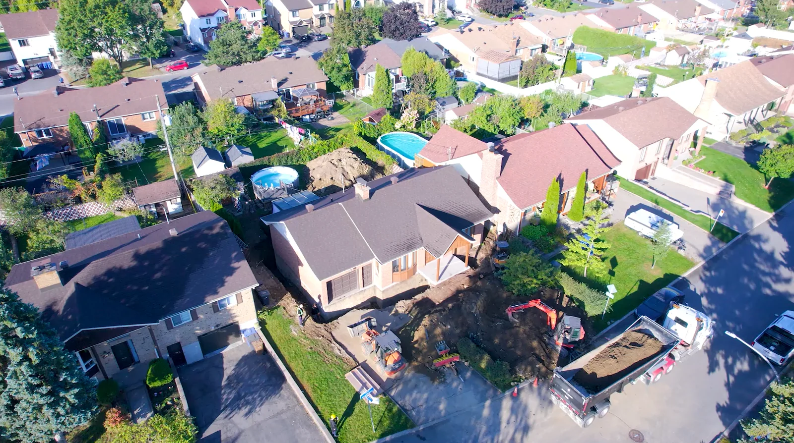
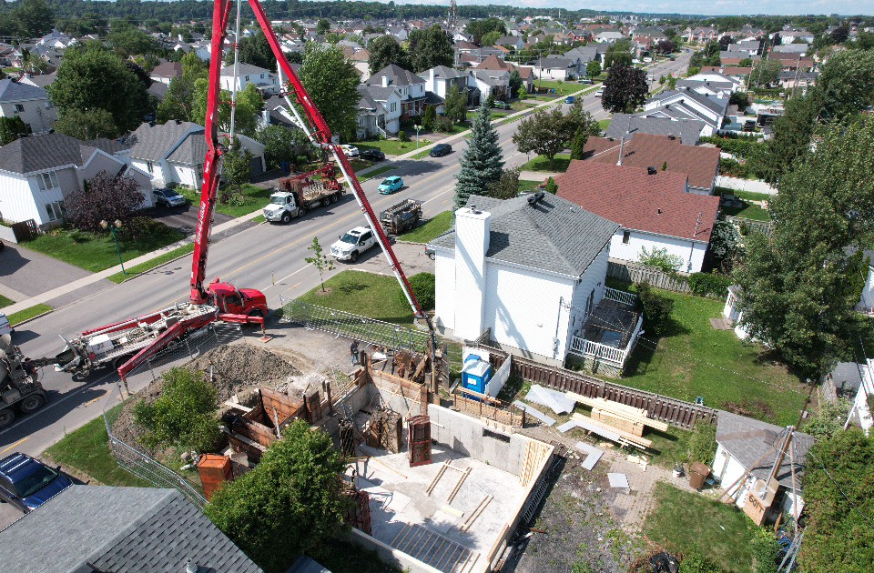
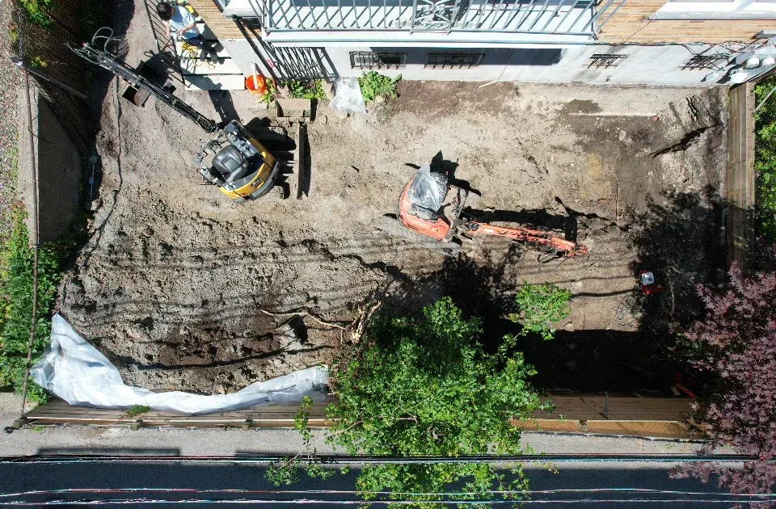
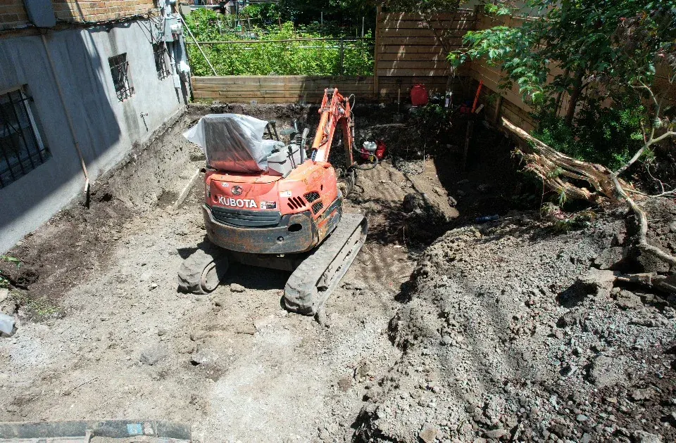
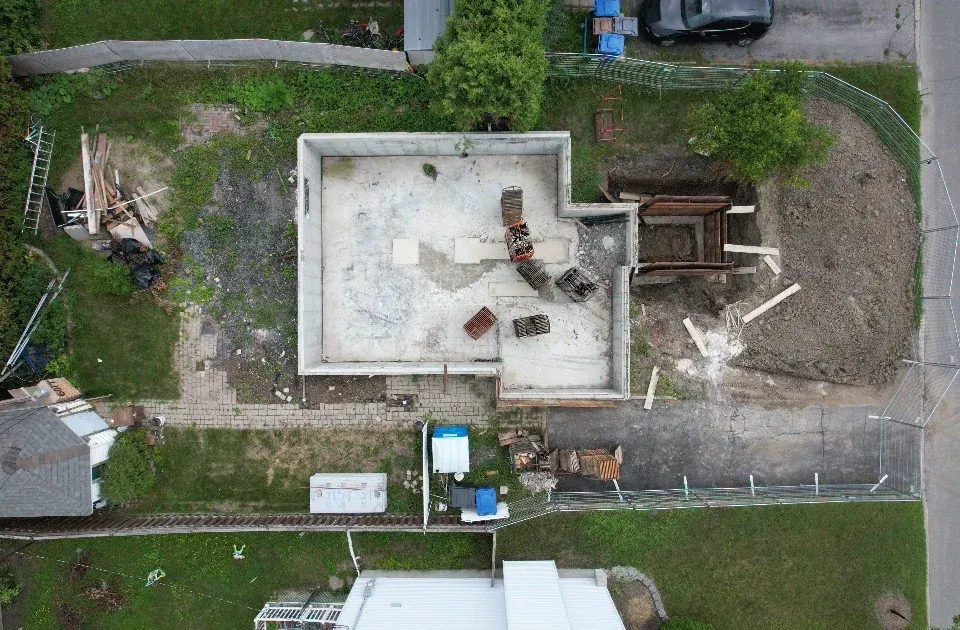
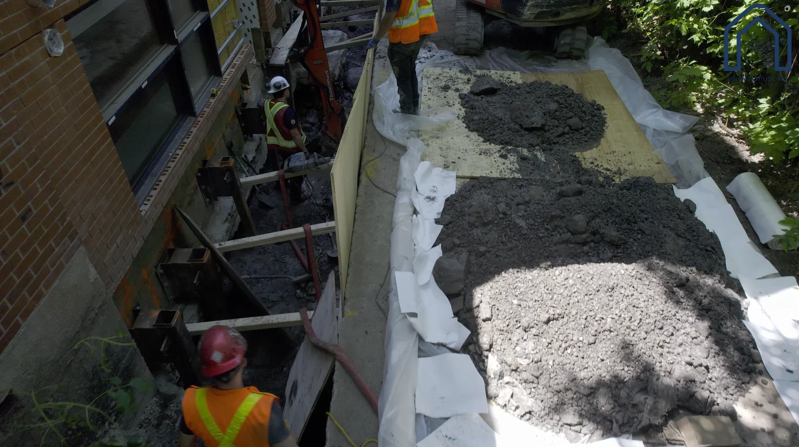

Forfait de suivi de chantier par drone
Une visite structurée pour documenter l’avancement d’un chantier avec des points de vue cohérents et des fichiers faciles à consulter. La fréquence et les livrables sont adaptés aux étapes du projet.






Le tarif final est confirmé selon le site, la fréquence des visites, les zones à couvrir et les livrables demandés.
Frais de déplacement
Déplacements
Les déplacements dans Terrebonne et Mascouche sont inclus. Pour un suivi récurrent, les frais sont établis dès la planification du calendrier.
Zone 1Terrebonne, Mascouche0 $
Zone 2Repentigny, Laval, Blainville, Boisbriand, Saint-Lin–Laurentides25 $
Zone 3Mirabel, Montréal, Boucherville, Longueuil, Saint-Jérôme, Joliette50 $
Hors territoirePlus de 75 kmSur soumission